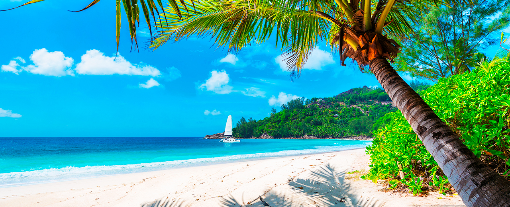
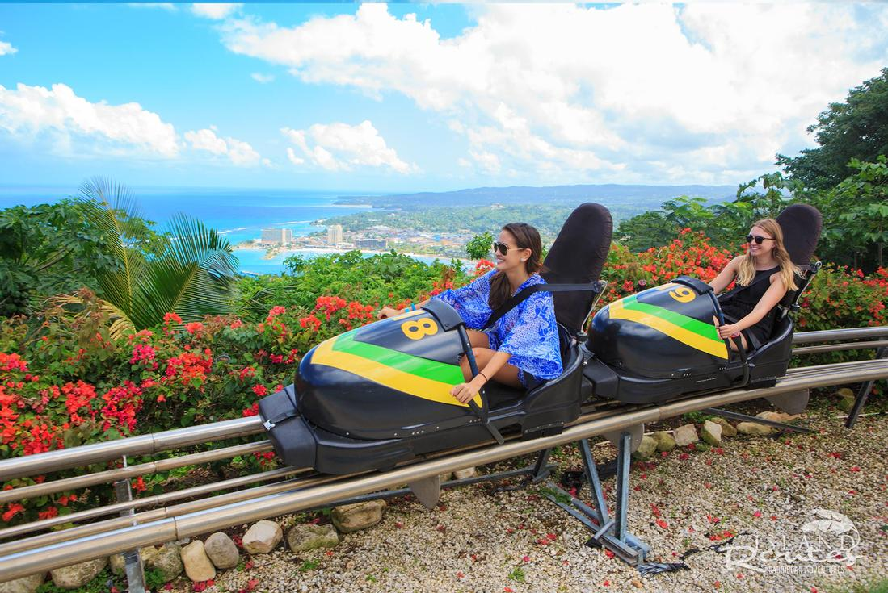
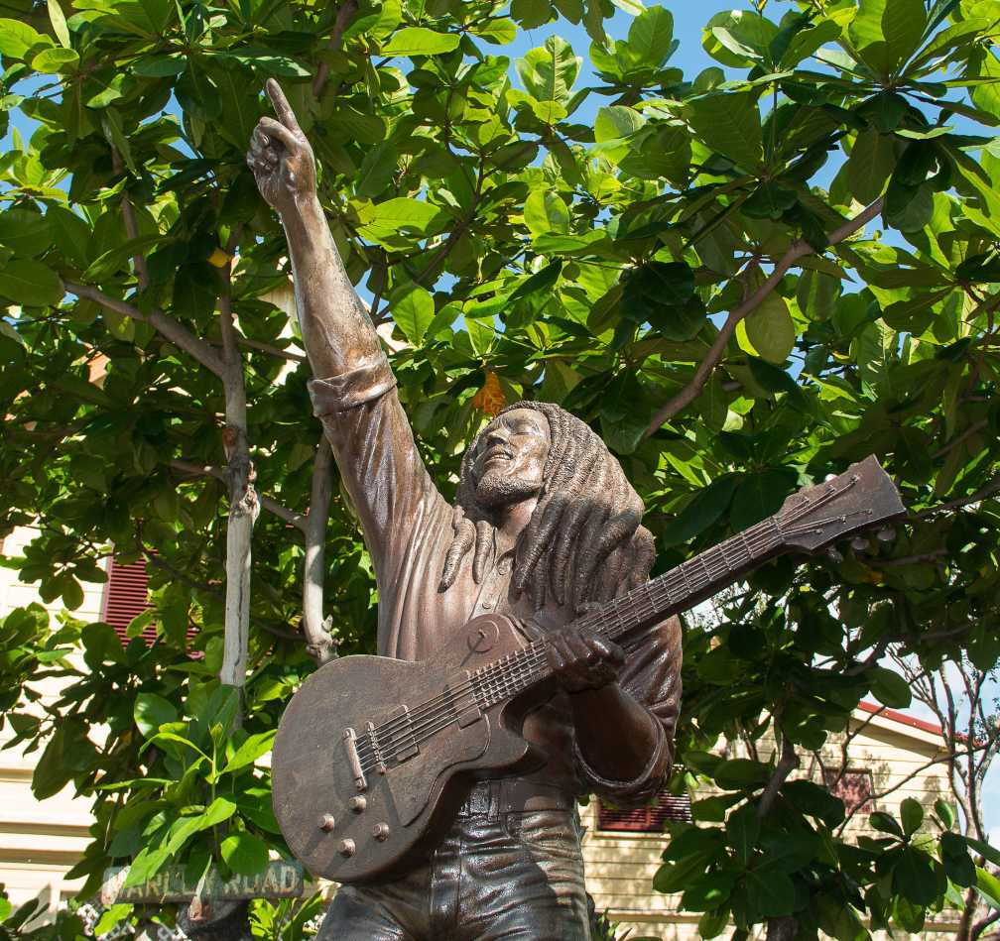
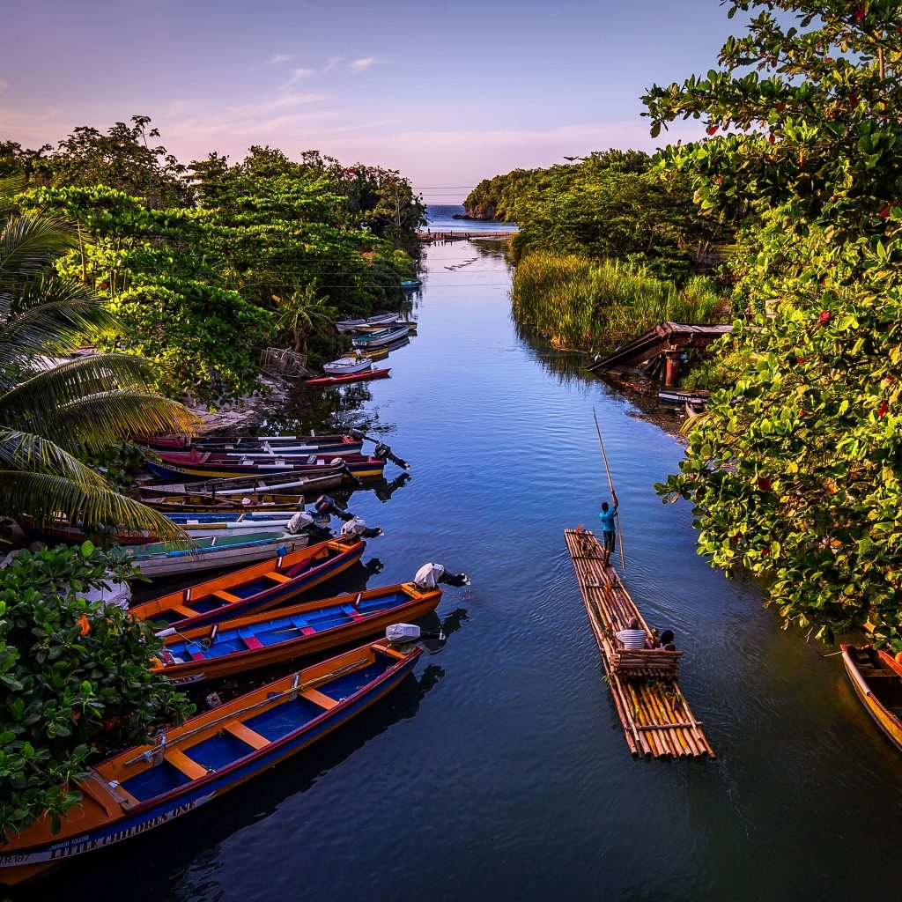
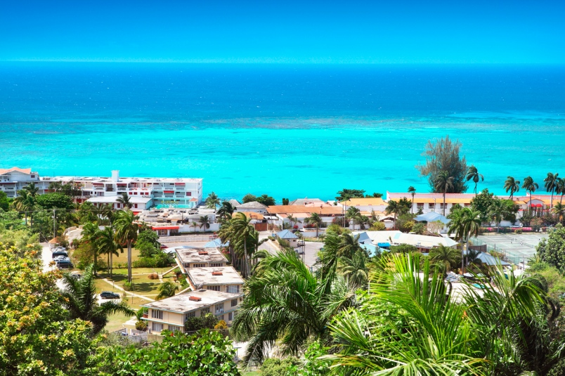
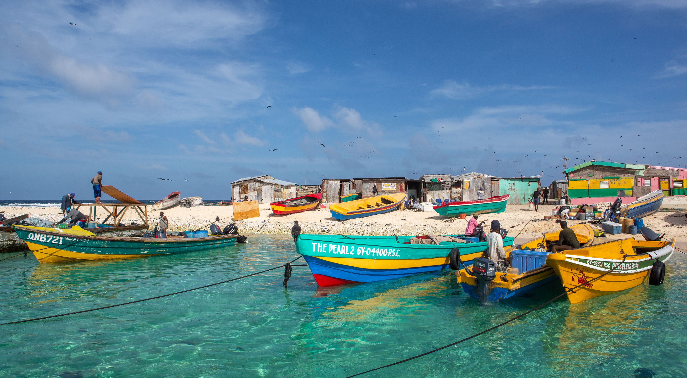

Previously inhabited by the indigenous Arawak and Taíno peoples, the island came under Spanish rule following the arrival of Christopher Columbus in 1494. Many of the indigenous people died of disease, and the Spanish transplanted African slaves to Jamaica as labourers. The island remained a possession of Spain until 1655, when England (later Great Britain) conquered it and renamed it Jamaica. Under British colonial rule Jamaica became a leading sugar exporter, with its plantation economy highly dependent on African slaves. The British fully emancipated all slaves in 1838, and many freedmen chose to have subsistence farms rather than to work on plantations. Beginning in the 1840s, the British utilized Chinese and Indian indentured labour to work on plantations. The island achieved independence from the United Kingdom on 6 August 1962.
With 2.9 million people, Jamaica is the third-most populous Anglophone country in the Americas (after the United States and Canada), and the fourth-most populous country in the Caribbean. Kingston is the country's capital and largest city, with a population of 937,700. Jamaicans mainly have African ancestry, with significant European, Chinese, Indian, Lebanese, and mixed-race minorities. Due to a high rate of emigration for work since the 1960s, Jamaica has a large diaspora, particularly in Canada, the United Kingdom, and the United States.
Jamaica
Jamaica, a Caribbean island nation, has a lush topography of mountains, rainforests and reef-lined beaches. Many of its all-inclusive resorts are clustered in Montego Bay, with its British-colonial architecture, and Negril, known for its diving and snorkeling sites. Jamaica is famed as the birthplace of reggae music, and its capital Kingston is home to the Bob Marley Museum, dedicated to the famous singer.
Jamaica's plant life has changed considerably over the centuries. When the Spanish arrived in 1494, except for small agricultural clearings, the country was deeply forested. The European settlers cut down the great timber trees for building and ships' supplies, and cleared the plains, savannas, and mountain slopes for intense agricultural cultivation. Many new plants were introduced including sugarcane, bananas, and citrus trees.
The Jamaican animal life, typical of the Caribbean, includes highly diversified wildlife with many endemic species found nowhere else on earth. As with other oceanic islands, land mammals are mostly several species of bats of which at least three endemic species are found only in Cockpit Country, one of which is at-risk. Other species of bat include the fig-eating and hairy-tailed bats. The only non-bat native mammal extant in Jamaica is the Jamaican hutia, locally known as the coney. Introduced mammals such as wild boar and the small Asian mongoose are also common. Jamaica is also home to about 50 species of reptiles,[63] the largest of which is the American crocodile; however, it is only present within the Black River and a few other areas. Lizards such as anoles, iguanas and snakes such as racers and the Jamaican boa (the largest snake on the island), are common in areas such as the Cockpit Country. None of Jamaica's eight species of native snakes is venomous.



Jamaica is an upper-middle income country with an average of 4.3 million tourists a year.
Jamaica is a Commonwealth realm, with Elizabeth II as its queen. Her appointed representative in the country is the Governor-General of Jamaica, an office held by Sir Patrick Allen since 2009. Andrew Holness has served as Prime Minister of Jamaica since March 2016. Jamaica is a parliamentary constitutional monarchy with legislative power vested in the bicameral Parliament of Jamaica, consisting of an appointed Senate and a directly elected House of Representatives.
Tourist attractions include Dunn's River Falls in St. Ann, YS Falls in St. Elizabeth, the Blue Lagoon in Portland, believed to be the crater of an extinct volcano. Port Royal was the site of a major earthquake in 1692 that helped form the island's Palisadoes.
Jamaica lies in the hurricane belt of the Atlantic Ocean and because of this, the island sometimes suffers significant storm damage. Hurricanes Charlie and Gilbert hit Jamaica directly in 1951 and 1988, respectively, causing major damage and many deaths. In the 2000s (decade), hurricanes Ivan, Dean, and Gustav also brought severe weather to the island.